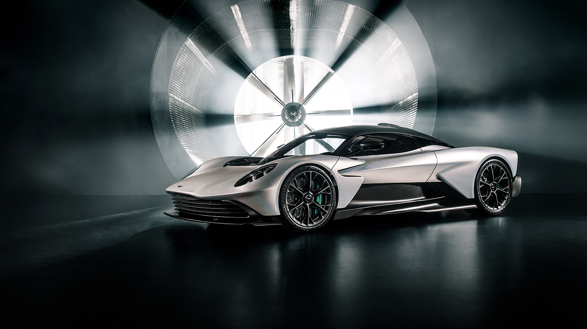

Aston Martin Története
Az Aston Martin története 1913-ban kezdődött, amikor Lionel Martin és Robert Bamford megalapították a céget. A márka nevét Martin egyik kedvenc versenyhelyszínéről, az „Aston Hill Climb”-ről kapta. Az Aston Martin hamar az elegáns, nagy teljesítményű autók szinonimájává vált, különösen a 20. század közepétől, amikor a James Bond-filmek állandó szereplője lett, például az ikonikus DB5 modellel. A márka különleges versenyörökséggel is büszkélkedhet, többek között a Le Mans-i 24 órás versenyeken elért sikereivel. Az évek során az Aston Martin folyamatosan ötvözte a hagyományos kézművességet a modern technológiával, így máig az egyik legismertebb brit luxusautó-márka maradt.
Legújabb modell: Aston Martin Valhalla (2024)

- Engine: 4.0L Twin-Turbo V8 Hybrid
- Horsepower: 937 hp
- Top Speed: 217 mph (350 km/h)
- 0-60 mph: ~2.5 seconds
- Price: Estimated at $800,000